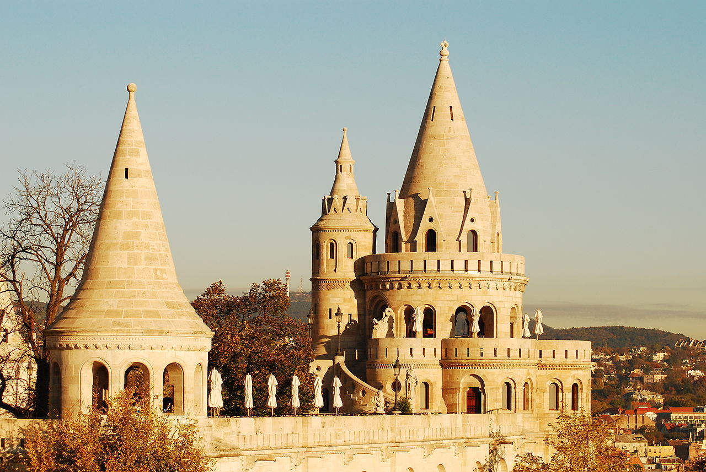

The Fisherman's Bastion is an iconic landmark of Budapest, located in the Castle District of Buda. It was named after the fishermen who used to hold their fish markets in this area during the medieval times.
Construction of the Fisherman's Bastion began in the late 19th century and took many years to complete. The building features a neo-Gothic style and has seven towers, each of which represents a different Hungarian historical figure. From the terraces, visitors can enjoy fantastic views of the Danube River and the Parliament building.
The Fisherman's Bastion is a very popular tourist attraction and an important part of the Castle District. Many people consider it to be one of the most romantic places in downtown Budapest, and it is definitely worth visiting for the spectacular view it offers.
The Fisherman's Bastion was designed by architect Frigyes Schulek, who also worked on the restoration of several other historic buildings in the Castle District, including the Matthias Church. The building was completed in 1905, and it was named after the guild of fishermen who were responsible for defending this stretch of the castle walls in the Middle Ages.
The Fisherman's Bastion is open to visitors every day of the year, and admission is free for the lower terrace and a fee is required to enter the upper towers. In addition to its beautiful architecture and stunning views, the Fisherman's Bastion also serves as a popular venue for cultural events, concerts, and festivals.
